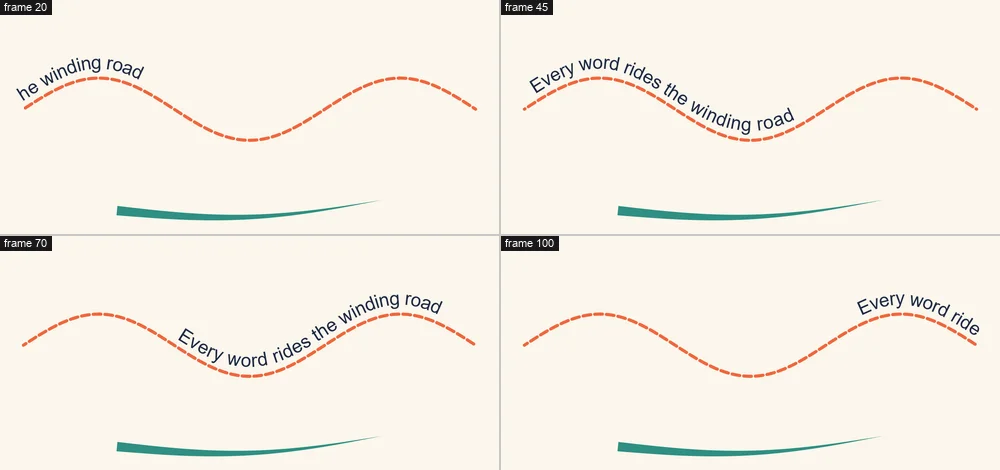

Tutorials
Dashes and text on a path
Turn a line into marching dashes, taper a brush stroke, and send words traveling along a curve.
This page is also a lesson inside Phoenix: choose and start Dashes and text on a path, and Phoenix points at each control as you go. It takes about 10 minutes.
To follow along here instead, download the starting document, dashes-and-text-path.fla, and open it with .

Shape operators change how a drawn line looks each frame without redrawing it, and letter animators move a text field's letters while it stays editable.
The orange Track and the green Swash are plain lines. The Words layer sits under the Path motion guide, the thin gray curve, which is never drawn in the movie.
1. Select the track
Press V and click the orange line. It is a drawing object, so one click picks it whole.
2. Open the Behaviors panel
Choose Window > Behaviors if it is not showing. It lists what is on the selection and the settings of each.
3. Add Dashes
With a shape selected the button reads Add Operator. Click it and choose Dashes. The line is cut into dashes 20 pixels long with gaps of 10.
4. Key the offset
The playhead is on frame 1. Click the diamond beside Offset (pixels) to key it at 0 on this frame.
5. Go to frame 120
Click frame 120 on the Track layer, the last one.
6. Offset at 600
Set Offset (pixels) to 600. Since the setting is keyed, this makes a second key here.
7. Play it
Press Enter, or click the play button in the timeline header. The dashes march along the line, like ants or a route on a map.
8. Select the swash
Press Enter again to stop. Click the thick green line.
9. Taper it
Click Add Operator and choose Taper. The line thins from its start to a point at its end, like a stroke of a brush.
Set Start width and End width to taper it the way you like.
10. Select the words
Press Shift+, (Control > Rewind) to go back to frame 1, then click the words at the top.
11. Put them on the path
With text selected the button reads Add Animator. Click it and choose Text on a Path. The letters jump onto the gray guide and turn with its curve.
12. Key the margin
Set First margin (pixels) to -700: the words slide back off the start of the line, out of sight. Then click the diamond beside it to key it on this frame.
13. Go to frame 120
Click frame 120 on the Words layer.
14. Margin at 1300
Set First margin (pixels) to 1300, past the end of the line.
15. Play it
Press Enter, or click the play button in the timeline header. The words ride in along the curve, over the marching dashes, and off the far end.
What you did
You made marching dashes, a tapered brush stroke and text that travels along a path, and every one stays editable: reshape the guide and the words follow it.
Try Above the line to lift the words off the curve, or Wrap round past the end for words that go round and round a closed path.
For everything this tutorial touches on, see Behaviors.